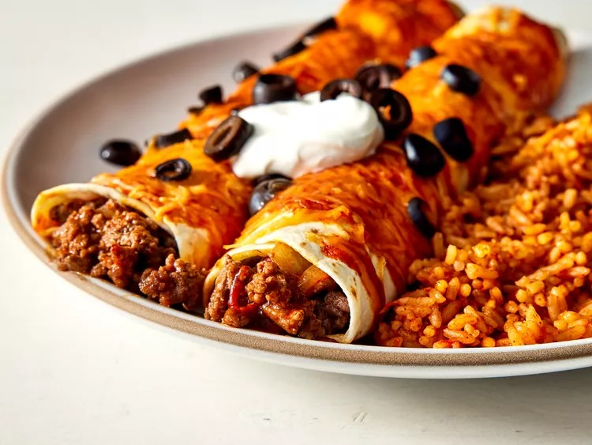

Beef Enchiladas

Description
A simple, quick, easy beef enchiladas recipe. Ground beef and onion are wrapped in flour tortillas, topped with Cheddar cheese and black olives, then baked. This is also great with leftover chicken, shredded beef, or turkey. Serve with a green salad or beans and rice.
Ingredients
- 1 pound lean ground beef
- 1 small onion, chopped
- 1 (1.5 ounce) package dry enchilada sauce mix
- 10 (10 inch) flour tortillas
- 2 cups shredded Cheddar cheese, divided
- 1 (2.25 ounce) can sliced black olives, drained
Steps
- Preheat the oven to 350 degrees F (175 degrees C).
- Cook ground beef and onion in a medium skillet over medium-high heat until beef is evenly browned and onion is tender.
- Prepare enchilada sauce according to package directions. Pour 1/4 cup of the sauce into the bottom of a 9x13-inch baking dish.
- Place an equal portion of the ground beef mixture and about 1 ounce of Cheddar cheese on each flour tortilla, reserving at least 1/2 cup of cheese. Then tightly roll the tortillas.
- Place rolled tortillas seam side down in the baking dish.
- Pour remaining sauce over the top of the enchiladas and sprinkle with remaining cheese and olives.
- Bake in the preheated oven until the sauce is bubbly and cheese is thoroughly melted, about 20 minutes.
- Garnish to taste and serve with your favorite side. Enjoy!